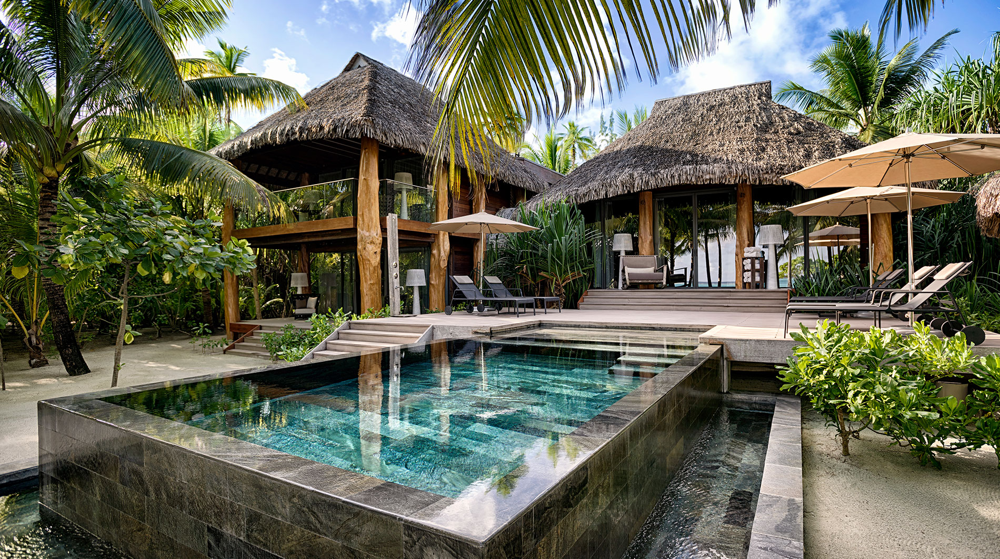
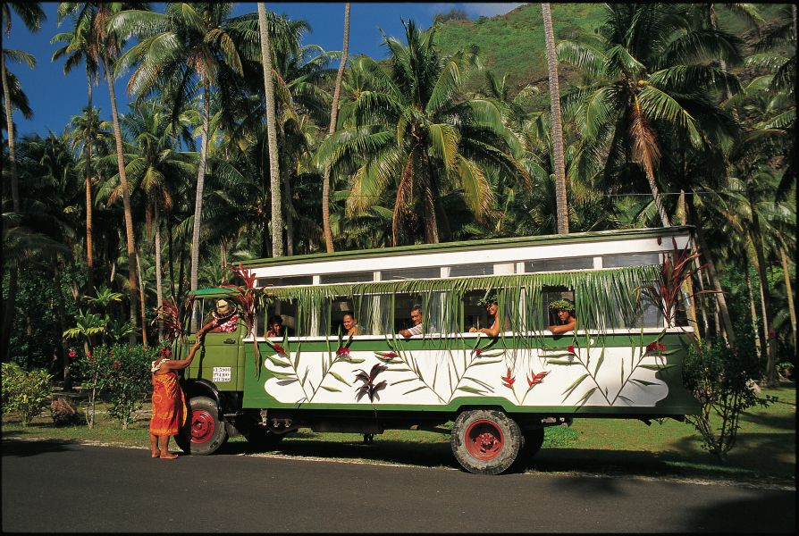

Frequently Asked Questions
How late does the island stay open?
Taniti's many attractions, restaurants, and shops each have their own schedule. However, most places are open by 8am and closed by 10pm. Bars on Taniti may serve alcohol until midnight, and may begin again at 9am. The drinking age on Taniti is 18+.
Will I need to practice another language?
While Taniti's native language is Tanitian, most residents in the city speak fluent English. You can find phrase books for the Tanitian language at most souveneir shops on the island.How walkable/bikeable is Taniti?
Taniti's many roads and paths are very easy and safe to walk or ride a bike on solo or as a group. Helmets are optional on Taniti but are strongly encouraged.